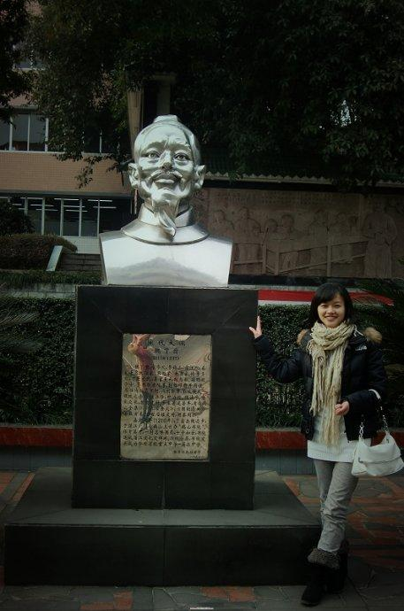

魏了翁
[宋][公元1178年－1237年，宋朝词人]
 魏了翁（1178～1237），字华父，号鹤山。四川邛州(今邛崃)蒲江人。南宋宁宗庆元五年（1199）己未科曾从龙榜进士第三人。
魏了翁少时，就与兄长们入学，其神情举止，宛如成人。几年后，出落得英俊潇洒，聪明非凡。他每天读书千余言，过目即不再看，被乡里人视为神童。15岁时，已写出《韩愈论》一文，行文抑扬顿挫，很有学者风范。
步入仕途后，魏了翁恪尽职守，历经剑南西川节度判官、国子正、武学博士。开禧元年（1205），韩?胄想以收复失地来巩固自己在朝中的地位。对此，满朝文武惊骇但不敢言，惟独魏了翁从国家根本利益出发，坦诚劝告：
“国家的三纲五常不确立，国家大计未定，社会上苟且偷安之风盛行，边关荒废，财政支出不足以养兵，人才不振，大家都说北伐，但人与人之间的关系紧张，烦忧不断，再说金国，地域宽广，国势正盛，在我看来，大宋未必有取胜的实力，为什么不将内修法度作为当务之急，以此来增强国力?不这样做，失天下就如同抛掷东西一样容易，国家的存亡就在于此。”计策一出，众人十分吃惊。
魏了翁改任秘书省正字，开禧二年（1206）任校书郎，因双亲年迈，魏了翁请求去外省为官，嘉定府正需人，于是朝廷让史弥远入朝为相，魏了翁辞官回乡，走到江陵，蜀将吴曦反叛，第二年，叛乱平定。魏了翁造屋于白鹤山下，凭借名士李燔等人，开门讲学，收授弟子，士人都争相背着书籍前来求学。从此，巴蜀之人熟知义理之学。
朝廷派魏了翁掌管汉州，他处理事情以教育感化百姓为主，注意倡导良好的社会风气。魏了翁首先免除拖欠的二十余万赋税，写文章告知皇帝，那里的人民尊重信奉他的法令，不敢触犯。不巧的是，境内桥梁倒塌，压死了百姓，朝廷只好将他降职一等。不出数月，又任命魏了翁为眉州知州，眉州虽然是文化之乡，有一套礼乐典章制度，但那里的老百姓喜欢对官吏论长论短，听说魏了翁到了眉州，纷纷出难题考他，魏了翁礼贤下士，既尊敬那些德行高尚的老人，又提拔后辈中的有为之人。农历的初一、十五必到白鹤书院，亲自为这些人讲学。在巡视乡里遇到宴请时总按长幼之序敬酒，以此教化百姓。魏了翁还用增加贡士名额的办法来振兴文风，凡利民之事，知无不为。不久，士人信服。民风为之一变。政绩名闻朝野。
嘉定四年（1211），魏了翁任潼川转运判官，他整治奸吏，关心百姓的疾苦，不畏权势，上疏请求给周敦颐、张载、程颢、程颐赐封爵位、定立谥号，为学者树立典范，得到了朝廷内外的一致响应，并为皇帝所接受。
遂宁郡守空缺，魏了翁前去就职。一到任，魏了翁就加高城墙，疏通护城河，严阵以待。仅过了一年，就遇到溃败的兵士攻占郡县，由于知道遂宁有准备，他们不敢攻城。人们非常佩服魏了翁的先见之明。
南宋宁宗嘉定十五年(1222)，朝廷就国策征求大臣的看法，魏了翁上疏二千余言。先论述人、天、地、人才、风俗五事，明白晓畅；又论郡县豪绅以强凌弱带来的弊端，极力主张变通。这时的魏了翁已经离开京城十七年了，皇帝对其心志看在眼里，喜在心上，高兴地接受了他的主张，并任命他为兵部郎中。
嘉定十七年，魏了翁任起居舍人，他对皇上一再强调:"事情的变化依仗人心向背，敌情有五方面要注意：“应该了解当时的事态，遵从天命，严守法令，集思广益，一门心思地去谋划，不是胜过坐观事态发展的消极态度吗?”接着又说士大夫阶层中的不良风气，认为君臣上下应同心协力。如果天下人都为自身利益着想，那么国家后患无穷。当前，大家表面上和睦，内心却互相猜忌，习惯于奉承讨好，我十分担心这一点。为什么不考察一下人心是邪是正？临事时不要有缺少人才的哀叹。魏了翁的话恳切没有避讳，当时的丞相开始不高兴了。理宗执掌天下后，魏了翁任起居郎，朝廷变年号为“宝庆”。此时不是夏季，天空却有雷电之声。皇上见了，曾有“我心终日不得安宁”之语。魏了翁入朝对皇上说：“天子之心安宁的道理在于天，这样讲并不是说在心灵之外天地间还有其他的神明。陛下内心不安宁寻求解脱，那么对天地就要像对待母亲那样，召见群臣要亲切，做事情都要探求事情的反面，国家才能巩固，没有什么事是做不成的。”又说：“如果皇上态度不明，社会风气浮浅庸俗，那朝内将没有敢触犯您直言进谏的忠臣，面临危难也不会有为气节而牺牲的勇将。只有用讲学的方式巩固儒学，不阐明儒学，还谈什么长治久安。”
此时正逢济王被贬后死去，魏了翁和胡梦昱等人请求皇上给他一个公正的评价。进言的胡梦昱被贬到岭南，魏了翁出关饯行，有人-魏了翁犯了欺世盗名之罪，勾结-之势诽谤国家。魏了翁降官三级，去了靖州。不久，湖南、湖北、-几处的学子不远千里背着书籍前来求学，魏了翁赶紧修订了百图本《九经要义》，并以此为教材。其修订之精密，超越了以前儒学研究者。
绍定五年（1232），魏了翁任潼州路安抚使、泸州知州。所管辖的地面达二千里，这里长期防备松懈，城墙破败。魏了翁到任后马上修筑城楼，增加军械，演习防务，严格军纪，兴建学校，为孤苦老人兴办养老院，死后为他们免费入葬。几个月后，百废俱举，气象一新。
魏了翁不久上疏论述十项弊端，希望恢复旧的典章制度来扩展教化。魏了翁主要的建议有：改革从上到下的职官体制。分散权力，各负其责。集思广益，兼听则明。恢复儒学，统一民心。其他如第六是恢复面奏的制度，以此来公正地罢免官吏。第九是恢复三衙的制度以强化君王的威势。第十是恢复管理在外将帅的制度，避免他们萌生私意等等。皇上读后十分感动。就让他当众朗读。即刻执行。
端平元年（1234），皇上命其任礼部尚书兼直学士院，了翁入朝奏到：首先希望明辨君子与小人，杜绝那些奸邪之徒窥测权力。又论及修身、齐家、选拔宗室人员、建小学等。他还说与金国议和靠不住，军备资财不能凭靠，反复说明利害，到计时漏下四十刻才退出来。皇帝都听取了这些意见。魏了翁在朝共六月，前前后后上奏二十余次，都是当时十分紧急的政务。皇上让他共同治理朝政，魏了翁由此遭到了那些猜忌者的合谋排挤，他们推说魏了翁知道兵法，于是受命督视江准京湖军马。魏了翁斟酌上下，五次辞职都不准。皇上安慰有加，让他负责编修《武经要略》。当面赐给他亲书唐严武诗及“鹤山书院”四个大字。魏了翁在江州幕府，警勉将帅，调遣援兵，祭奠那些牺牲的将士，让吴潜作为参谋，开始约二十天后被朝廷召见回朝，了翁希望解甲归田，皇上不应允，让他以资政殿学士、湖南安抚使的身份治理潭州，魏了翁婉言相拒，皇上又让他担任绍兴知府、浙东安抚使。不久又有圣旨，说不知道像了翁这样的国家栋梁能有几个人，希望立即回朝，任命他为台辅。魏了翁不愿意，嘉熙元年（1237），魏了翁任福建安抚使，知福州。多次-希望回乡，疾病加重，门人探望，还穿衣束冠出来酬谢，并且说：“我平生要求自己淡然无为。”又提起蜀兵叛乱，眉头紧皱了很久，又口授了奏章，不久便离开了人世。朝廷封魏了翁为太师，谥号文靖。在苏州赐宅第，累封秦国公。
魏了翁一生在南宋与金国对峙的局面中度过。他以救国、御外、忠君的信念始终不移上陈国事，屡遭贬谪。忧国失意的生活使他滋长了追求哲理和淡泊明志的生活志趣。他研讨经学，教诲学子，尊师敬长，身体力行。
著有《鹤山集》、《九经要义》、《周易集义》、《易举隅》、《周礼井田图说》、《古今考》、《经史杂抄》、《帅友雅言》等。